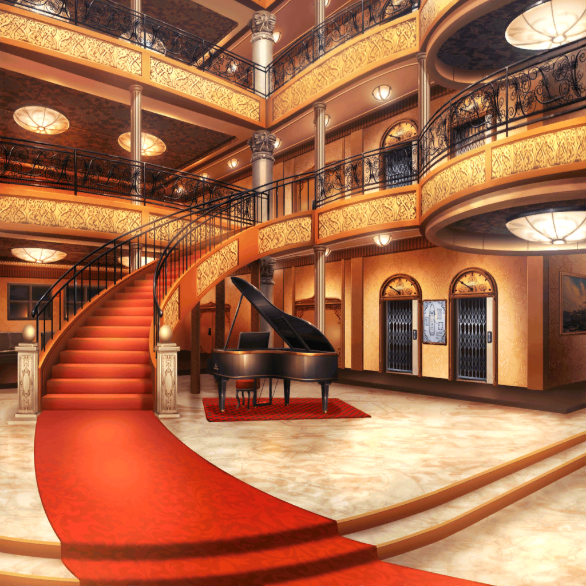

スマイル号 船内
はぐみ
ねえねえ、かのちゃん先輩、
怪盗にさらわれてる間、どんな感じだった？
花音
どんな……不思議と、こわくなかったよ
花音
えっと、怪盗さんがいい人に思えたの。
なんだか親しみがあって、前から知ってるような……
はぐみ
知ってる人！？
え～、誰だろう……
美咲
…………
美咲
（花音さんもはぐみも、なんで気が付かないんだろう……）
こころ
まあ、もういいわ。
花音が無事に戻ってきたんだから船旅を楽しみましょう！
はぐみ
うんうん！
楽しもう！
はぐみ
でも、その前に腹ごしらえ！
はぐみ、お腹ペコペコ～！
こころ
そうね、食事にしましょう！
レストランへ行くわよ
薫
それはいいね。
私もちょうど何か食べたいと思ってたところなんだ
こころ
あら、薫。
あなた、今までどこにいたのかしら？
薫
ん？
ずっと君たちと一緒にいたよ？
はぐみ
え！？
いたの！？
薫
怪盗を追い詰めるのに必死で気が付かなかったのかな？
それよりレストランへ行こう。
はぐみはお腹がぐーぐー鳴ってるんだろう？
はぐみ
うん！
レストランどこ～？
こころ
あっちよ！
なんでもあるから、好きなだけ食べられるわ！
花音
豪華客船でのディナーなんてドキドキしちゃうね、美咲ちゃん
美咲
まあ、きっとおいしいものが出てくるんだろうね。
見たことない料理とかもありそう
はぐみ
はぐみ、今だったらなーんでもおいしく食べられちゃうよ！
お肉でもー麺でもーごはんでもー！
花音
デザートもあるかな？
きっとかわいいケーキとかムースとかなんだろうな～
美咲
パクチー使ってなければ、なんでもいいや
はぐみ
こころんはこの船で食べたことあるの！？
どんなものがある？
こころ
なんでもあるわよ。
オムライスが食べたいと思ったらオムライスが出てくるし、
ケーキが食べたいと思えばケーキが出てくるし
はぐみ
じゃあじゃあ、お肉とかカレーも出てくる！？
こころ
もちろんよ！
食べたいと思ったものが出てくるの！
はぐみ
すっごーい！
魔法のレストランみたい！
はぐみ
うう、おいしそうな話してたらもっとお腹空いてきちゃった！
はぐみ
ねえ！
レストランまで競争しよ！
一番最初についた人がいーっぱい食べていいの！
こころ
楽しそうね！
いいわよ！
花音
あ、ふたりともちょっと待って～！！
美咲
はあ、あんだけ動いてまだ体力残ってるの信じられない
薫
あのふたりは張り切ってたからね。
君はそうでもなかったみたいだけど
美咲
そりゃすぐ気が付くし。
ギフトショップで好きなものは儚いものって言われたり、
シアターであれだけキザに演じられたら、嫌でもわかるよ……
美咲
薫さん、なんで怪盗なんかやってたの？
薫
車を運転してきてくれたスーツの女性に、船に乗り込む前、
声をかけられたんだ。
船旅の余興に、怪盗を演じてくれないかと
薫
怪盗だなんて私以外にはつとまらないからね、
喜んで引き受けさせてもらったよ
美咲
おかげでこっちは大変だったけど……
薫
そうかい？
なんだかんだいって、こころとはぐみは楽しそうだったよ
薫
それに、私もこころとはぐみに追いかけられるのは楽しかったよ
薫
花音に少し怖い思いをさせてしまったのは申し訳ないけどね
美咲
あたしにも恥ずかしい思いさせたしね
薫
まあ、普段美咲は演技なんてしないだろうから、
人前で演技するのは新鮮で楽しかっただろう？
美咲
まぁ……
演技が楽しかったかと言われると疑問だけど、
記憶に残る船旅にはなった……かな？
薫
ふふ、それも素敵な思い出だよ。
私は真の名探偵は美咲だと思っているよ。
ずっとこころやはぐみをサポートしていたのは美咲だからね
美咲
そりゃどーも。
やれやれ……２人のお守りはなかなか大変だったよ
薫
なんにせよ、怪盗を演じられたし
みんなの笑顔を見られて楽しかったよ
薫
さ、私たちもレストランへ急ごう。
あの勢いだとはぐみに全部食べられてしまいそうだからね
美咲
あれ？ ３人とも戻ってきたみたい
こころ
ミッシェルへのギフト、選ぶの忘れてたわ！
はぐみ
こころん、あれあげればいいんじゃない？
ギフトショップで選んだ謎のお面！
こころ
いいアイディアだわ！
怪盗さんには選んでもらえなかったけど、
きっとミッシェルなら気に入ってくれるわ！
美咲
ええ……
こころ
今度お面かぶってＤＪしてもらいましょ！
薫
それは見てみたいな
はぐみ
楽しみだね～！
美咲
ははは……
花音
美咲ちゃん……
花音
（私も楽しみにしてるなんて言えない……）